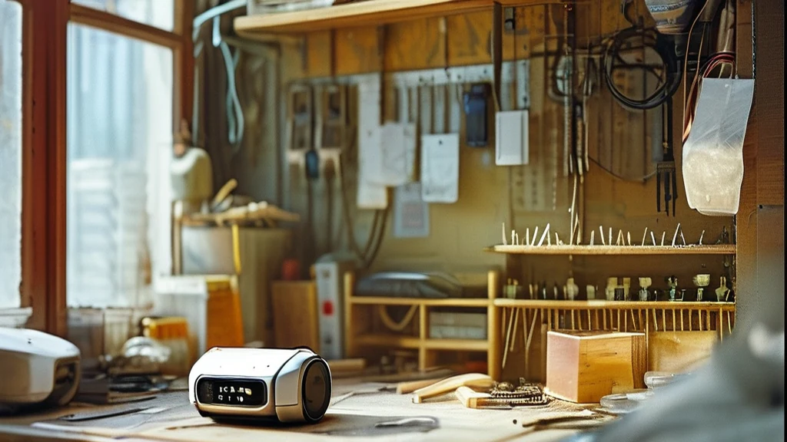
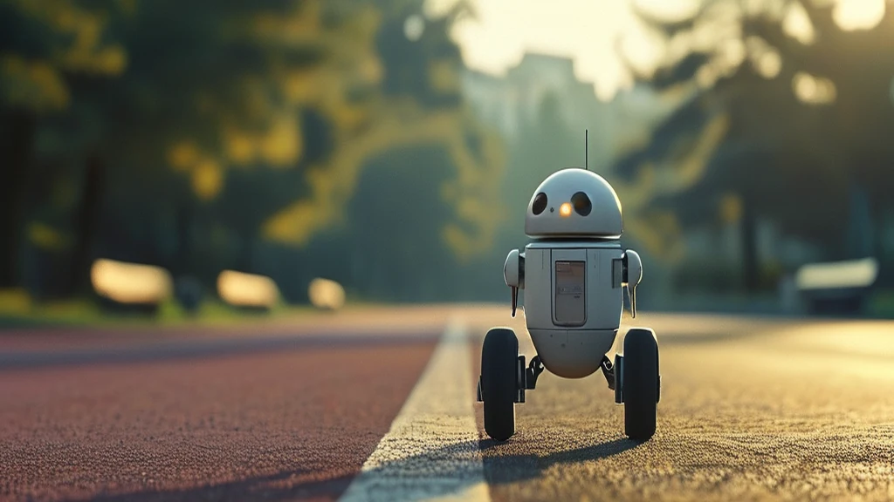
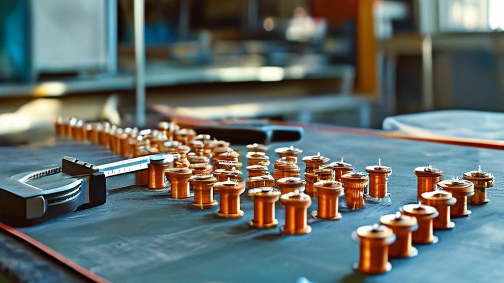
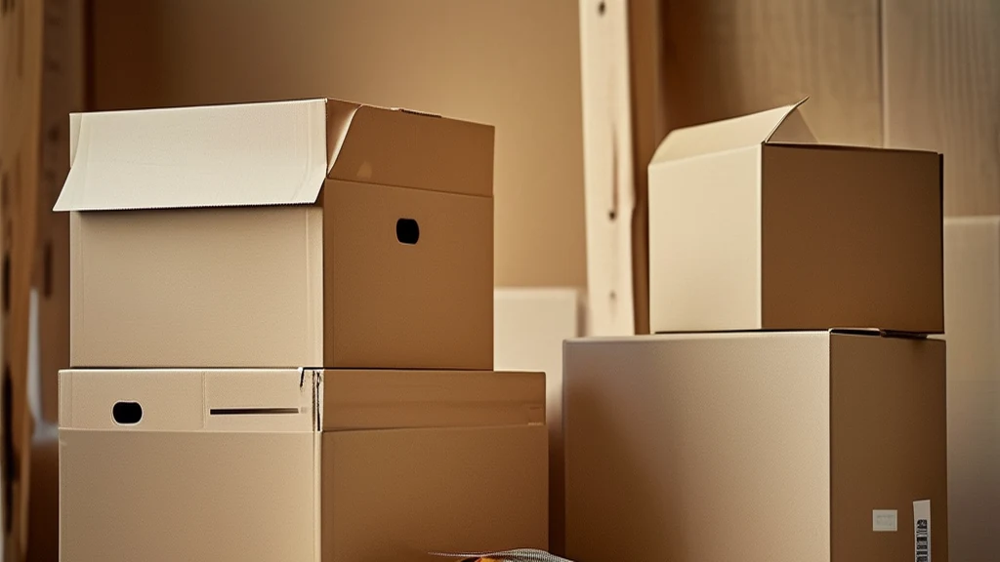

圖片由 AI輔助創作（Kwai-Kolors）Image by AI (Kwai-Kolors)
【鄭哥點評】欄目：鄭哥博客點評｜日期：2026-11-28
今日審核放行兩條，兩間公司都喺深圳，兩個創辦人都係大廠出身、出來自己搞硬件——一個從大疆出來造跟住人跑嘅拍攝機械人，一個從安克出來造 76 克嘅會議音箱。共同點唔係產品，而係佢哋都揀咗「細、貴、賣感覺」嘅硬件。

圖片由 AI輔助創作（Kwai-Kolors）Image by AI (Kwai-Kolors)
一、7926 人、500 萬美元：Beni 由跑道跑到現貨
深圳人才公園嘅跑道上，一台唔到膝頭高嘅白色機械人緊跟住一位跑者，鏡頭一直對住後者。呢台機械人叫 Beni，出自深圳妙動科技，公司 2025 年 1 月成立。2026 年 7 月，Beni 喺 Kickstarter 上線，最終吸引 7926 名支持者，籌到超過 500 萬美元，創下平台消費級機械人嘅眾籌金額紀錄。近日 Beni 全球開啟現貨發售，標準套裝 4999 元，探索套裝 5799 元。
兩個創辦人都係大疆出身。CEO 高建榮早年係汪滔身邊助理之一，負責過大疆 RoboMaster 賽事、供應鏈同全球營銷；CTO 楊碩師從李澤湘，曾任大疆技術總監，2018 年去卡內基梅隆讀博研究足式機械人控制，畢業後入特斯拉 Optimus 團隊做核心工程師。
產品本身：雙輪足結構，重約 1.75 公斤，最高時速 28.8 公里，跳得起 25.4 釐米，拍 4K60 幀增穩畫面。報導尾段有一句最值錢：團隊自研電機電路板同線圈，用強化學習訓練全部功能，量產難點喺一致性。
來源：界面新聞《兩位大疆老兵，造了一台追著人跑的拍攝機器人》，2026-11-26｜https://m.jiemian.com/article/15373536.html
圖片由 AI輔助創作（Kwai-Kolors）Image by AI (Kwai-Kolors)
二、76 克、估值 2.2 億：Palmo Meet 走另一條路
11 月 26 日，AI 聲學感知公司 HearWell（深圳聽好智能科技有限公司）宣布連續完成兩輪融資，累計金額數千萬元，博裕創投、璀璨資本、梅花創投、修遠資本等機構與產業投資方一齊下注，向陽資本擔任長期獨家財務顧問。公司運營主體成立於 2026 年 2 月，創辦人王志軍直接持股 52%。
王志軍係前安克創新 Smart Audio 業務線 1 號位，再往前喺科大訊飛負責近五年錄音筆業務。首款產品 Palmo Meet 係一台能磁吸喺手機背面嘅掌上會議音箱加錄音設備，約 76 克、厚約 8.5 毫米，整合 360° 全向拾音、遠場語音採集同雙向 AI 降噪，並將會前提醒、會中回憶膠囊、會後摘要串成一條鏈。
Palmo Meet 已進入商業化推進，計劃走海外眾籌同全球渠道；第二款產品 EarMind 定位係耳朵嘅外骨骼。2026 年 8 月天使輪時，公司估值 2.2 億元。
來源：瑞財經《前安克高管王志軍創業，造了個僅重76克的AI會議神器》，2026-11-26｜https://m.rccaijing.com/news-7531565254749910142.html

圖片由 AI輔助創作（Kwai-Kolors）Image by AI (Kwai-Kolors)
三、兩條路，錢卡喺同一個位置
一間靠眾籌：7926 人、超過 500 萬美元。一間靠融資：兩輪累計數千萬元、估值 2.2 億元。產品一個 4999 元起、一個 76 克。表面睇係兩門唔同嘅生意，但兩份報導都指向同一個位置——錢唔係卡喺「做唔做得出來」，而係卡喺「做唔做得出一萬台一樣嘅」。
Beni 自己把難點講白了：電機電路板同線圈自研，全部功能用強化學習訓練，量產難點喺一致性。呢句話翻譯成成本就係：每一台嘅參數都要校到同一個窗口，校唔到就要人手補，人手補就係毛利。Palmo 嘅難點喺另一邊：76 克嘅設備壞咗，退一部嘅來回運費可能貴過零件本身，所以佢一開始就講明要走海外眾籌同全球渠道，售後網絡要同渠道一齊建。
兩邊都係同一個算術：售價減去物料、模具攤分、認證、運費同售後，剩下嘅才叫毛利。眾籌額同融資額只係入場券，唔係利潤。
來源：界面新聞、瑞財經（綜合報導），2026-11-26｜https://m.jiemian.com/article/15373536.html

圖片由 AI輔助創作（Kwai-Kolors）Image by AI (Kwai-Kolors)
四、鄭哥點評：這兩門生意，值不值得跟
① 錢到底被誰賺走：Beni 嘅 500 萬美元除開 7926 人，平均每位支持者約 630 美元；現貨標準套裝 4999 元人民幣，兩個數字同一量級。即係眾籌階段冇靠大幅溢價收錢，毛利只能從量產同自研零件裡摳——電機、線圈自己揸，錢就留在自己手上；芯片、雲台、代工外購，錢就流去供應商。Palmo 嘅兩輪數千萬唔係收入，係彈藥，最終會流去聲學器件、開模同海外渠道；2.2 億元估值係投資人對「安克那套打法可以複製」開嘅價，唔係市場已經付咗嘅錢。
② 最值得學嘅係 Palmo 嘅次序：先用履歷換機構信任拿到錢，再做產品，再走海外眾籌同全球渠道，第二款 EarMind 已經排隊。呢個次序令佢唔使靠一款產品定生死。最唔值得學嘅係把「7926 人、500 萬美元」當成生意成功——Beni 自己都話量產難點喺一致性，即係佢哋清楚呢關未過；大批量交付嗰日，退貨率同產線良率才係真考試。
③ 一條可執行嘅尺：任何硬件眾籌，先算「眾籌總額 ÷ 支持者數」得到真實客單價，再對現貨價。兩者差唔多，代表眾籌只係預售、冇溢價可賺，毛利必須靠量產效率同自研零件；眾籌客單價明顯高過現貨，就要預佢交付後被比較、退單。第二條：單台售價要頂得住「返修率 × 來回運費」。照呢把尺，Beni 我判「可跟」——自研電機線圈、價格同眾籌客單價對得上；Palmo 判「觀察」——兩輪錢到位，但售價未公開，毛利同售後成本都算唔出。
圖片由 AI輔助創作（Kwai-Kolors）Image by AI (Kwai-Kolors)
\[Zheng Ge's Take\] Column: Zheng Ge's blog commentary | Date: 2026-11-28
Two stories cleared today audit, both in Shenzhen, both founded by people who left big hardware companies to build their own product: one from DJI making a camera robot that follows you as you run, one from Anker making a 76-gram conference speaker. What they share is not the product but the choice of small, expensive hardware that sells a feeling.
圖片由 AI輔助創作（Kwai-Kolors）Image by AI (Kwai-Kolors)
1. 7,926 backers, US$5 million: Beni goes from the running track to retail
On the running track in Shenzhen Talent Park, a white robot less than knee-high follows a runner, its camera pointed at him the whole way. It is called Beni, made by Shenzhen company Miaodong Technology, founded in January 2025. In July 2026 Beni launched on Kickstarter, drew 7,926 backers and raised more than US$5 million, a record for a consumer robot on the platform. It has now gone on open sale worldwide at 4,999 yuan for the standard set and 5,799 yuan for the explorer set.
Both founders came out of DJI. CEO Gao Jianrong was one of Frank Wang assistants, and ran DJI RoboMaster competition, supply chain and global marketing; CTO Yang Shuo studied under Li Zexiang, was a DJI technical director, went to Carnegie Mellon in 2018 to research legged robot control, and joined Tesla Optimus team as a core engineer after his PhD.
The product: a two-wheel-legged structure weighing about 1.75 kilograms, a top speed of 28.8 km/h, a 25.4-centimetre jump, and stabilised 4K60 footage. The most valuable line in the report comes at the end: the team built its own motor boards and coils, trained every function with reinforcement learning, and the hard part of mass production is consistency.
Source: 界面新聞《兩位大疆老兵，造了一台追著人跑的拍攝機器人》，2026-11-26 | https://m.jiemian.com/article/15373536.html
圖片由 AI輔助創作（Kwai-Kolors）Image by AI (Kwai-Kolors)
2. 76 grams, a 220-million-yuan valuation: Palmo Meet takes the other road
On 26 November, AI acoustic-sensing company HearWell (Shenzhen Tinghao Intelligent Technology) said it had closed two consecutive funding rounds totalling tens of millions of yuan, with Boyu Capital, Cuican Capital, Meihua Venture and Xiuyuan Capital joining industrial investors, and Xiangyang Capital as long-term exclusive financial adviser. The operating company was set up in February 2026, and founder Wang Zhijun holds 52 per cent directly.
Wang was the number one in the Anker Innovations Smart Audio line, and before that spent nearly five years on voice recorders at iFlytek. The first product, Palmo Meet, is a palm-sized conference speaker and recorder that clips magnetically to the back of a phone: about 76 grams, 8.5 millimetres thick, with 360-degree pickup, far-field voice capture and two-way AI noise reduction, tying pre-meeting reminders, in-meeting memory capsules and post-meeting summaries into one chain.
Palmo Meet is already in commercial rollout, planned for overseas crowdfunding and global channels; a second product, EarMind, is positioned as an exoskeleton for the ear. At its angel round in August 2026 the company was valued at 220 million yuan.
Source: 瑞財經《前安克高管王志軍創業，造了個僅重76克的AI會議神器》，2026-11-26 | https://m.rccaijing.com/news-7531565254749910142.html
圖片由 AI輔助創作（Kwai-Kolors）Image by AI (Kwai-Kolors)
3. Two roads, money stuck in the same place
One raised money from the crowd: 7,926 backers, over US$5 million. The other from investors: two rounds in the tens of millions of yuan, a 220-million-yuan valuation. One product starts at 4,999 yuan, the other weighs 76 grams. On the surface these are different businesses, but both reports point at the same place: the money is not stuck on whether the product can be built, but on whether ten thousand identical ones can.
Beni says the hard part out loud: in-house motor boards and coils, every function trained with reinforcement learning, and consistency as the mass-production bottleneck. Translated into cost, that means every unit has to be calibrated into the same window; whatever cannot be, gets fixed by hand, and hand-fixing is margin. The Palmo bottleneck sits on the other side: when a 76-gram device fails, the return freight can cost more than the part, which is why it announced overseas crowdfunding and global channels from the start, with after-sales built alongside the channel.
Both come down to the same arithmetic: price minus materials, tooling amortisation, certification, freight and after-sales is what you can call gross margin. A crowdfunding total and a funding round are entry tickets, not profit.
Source: 界面新聞、瑞財經（綜合報導），2026-11-26 | https://m.jiemian.com/article/15373536.html
圖片由 AI輔助創作（Kwai-Kolors）Image by AI (Kwai-Kolors)
4. My take: are these two businesses worth following
1. Who actually takes the money: the US$5 million of Beni divided by 7,926 backers is about US$630 a head, and the standard retail set is 4,999 yuan — the same order of magnitude. So the campaign did not collect a large premium; margin has to come from volume and from parts made in-house. Keep the motors and coils and the money stays; buy chips, gimbals and assembly and it flows to suppliers. The tens of millions at Palmo are ammunition, not revenue, and will end up in acoustic components, tooling and overseas channels; a 220-million-yuan valuation is what investors pay for the belief that the Anker playbook can be repeated, not money the market has already spent.
2. What is worth learning is the sequence at Palmo: use a strong CV to win institutional money first, then build the product, then go to overseas crowdfunding and global channels, with a second product already queued. That order means no single product decides whether the company lives. What is not worth learning is treating 7,926 backers and US$5 million as business success — Beni itself names consistency as the mass-production bottleneck, which is an admission that the gate is not yet passed. Return rates and line yield on the first big shipment are the real exam.
3. One executable test: for any hardware crowdfunding project, divide the total by the number of backers to get the real average order value, then compare with the retail price. If they are close, the campaign was only a pre-sale with no premium, and margin must come from manufacturing efficiency and in-house parts. If the campaign average is clearly above retail, expect comparisons and refunds after delivery. Second test: unit price must survive return rate times round-trip freight. By that measure Beni is followable — in-house motors and coils, and the price lines up with the campaign average. Palmo is watch: the money is in, but no retail price is public, so neither margin nor after-sales cost can be calculated.